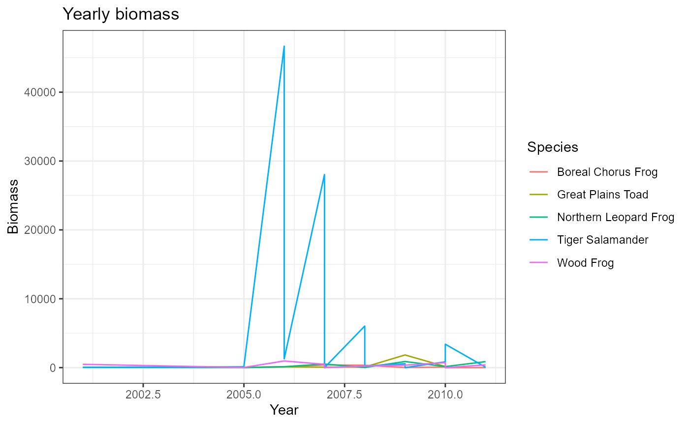

Tutorial.RmdFirst things first - install the package.
devtools::install_github("brittanymaldonado/maldonadopackage")## Skipping install of 'maldonadopackage' from a github remote, the SHA1 (b3e9e803) has not changed since last install.
## Use `force = TRUE` to force installationNow load the package.
library(maldonadopackage)Function 1 - Formatting dates and creating “Year” and “Month” columns
Do you have a long-term dataset with many observations? Would you like to format your data in a way that allows easy visualization of year-to-year trends? Then this is the function for you! The dataset you input only needs to have a “Date” column in the following format: MM/DD/YYYY. This function is ideal for long-term datasets with observations across years or many observations per month. What do you get out of it? A date column reformatted with lubridate, a “Year” column that pulls the year for every observation, and a “Month” column that pulls the month for every observation.
##
## Attaching package: 'lubridate'## The following objects are masked from 'package:base':
##
## date, intersect, setdiff, union
file_path <- system.file("extdata", "agp.csv", package="maldonadopackage")
agp <- read.csv(file_path)
agp_parsed <- parse_dates(agp)
head(agp_parsed)## ï..ID Location TrapType Species Stage Mass SVL
## 1 5533 WHS_High School Bucket Tiger Salamander Not Tadpole/Larvae 25 97.1
## 2 5535 MSU_Ag Site Bucket Wood Frog Not Tadpole/Larvae 5 31.0
## 3 5534 WHS Bucket Wood Frog Not Tadpole/Larvae 7 41.0
## 4 5538 WHS_High School Bucket Wood Frog Not Tadpole/Larvae 8 42.0
## 5 5536 WHS_High School Bucket Wood Frog Not Tadpole/Larvae 5 31.0
## 6 5537 WHS_High School Bucket Wood Frog Not Tadpole/Larvae 15 54.4
## DATE Year Month
## 1 2001-06-02 2001 6
## 2 2001-06-03 2001 6
## 3 2001-06-03 2001 6
## 4 2001-06-03 2001 6
## 5 2001-06-03 2001 6
## 6 2001-06-03 2001 6That’s great and all, but how do we use this? Now that the dates are formatted in this way, we can manipulate these data to observe trends.
Function 2 - Calculating biomass for each life stage of each species in the dataset
agp_biomass <- biomass(agp_parsed, Species, Stage, Year, Mass)
agp_biomass## # A tibble: 47 x 4
## # Groups: Species, Stage [9]
## Species Stage Year Biomass
## <chr> <chr> <dbl> <dbl>
## 1 Boreal Chorus Frog Not Tadpole/Larvae 2005 12.5
## 2 Boreal Chorus Frog Not Tadpole/Larvae 2006 98.4
## 3 Boreal Chorus Frog Not Tadpole/Larvae 2007 394.
## 4 Boreal Chorus Frog Not Tadpole/Larvae 2008 346
## 5 Boreal Chorus Frog Not Tadpole/Larvae 2009 18
## 6 Boreal Chorus Frog Not Tadpole/Larvae 2010 86
## 7 Boreal Chorus Frog Not Tadpole/Larvae 2011 2.9
## 8 Boreal Chorus Frog Tadpole/Larvae 2010 0
## 9 Great Plains Toad Not Tadpole/Larvae 2005 54.7
## 10 Great Plains Toad Not Tadpole/Larvae 2006 106.
## # ... with 37 more rowsThis creates a small data frame that pretty easy to scroll through, but it would be better if we could visualize it. This third function is a streamlined approach to generating a plot for these data.
Function 3 - Generating a line plot showing biomass for each life stage of each species
plot_data(agp_biomass, Year, Biomass, Species)